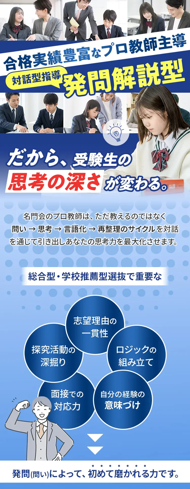
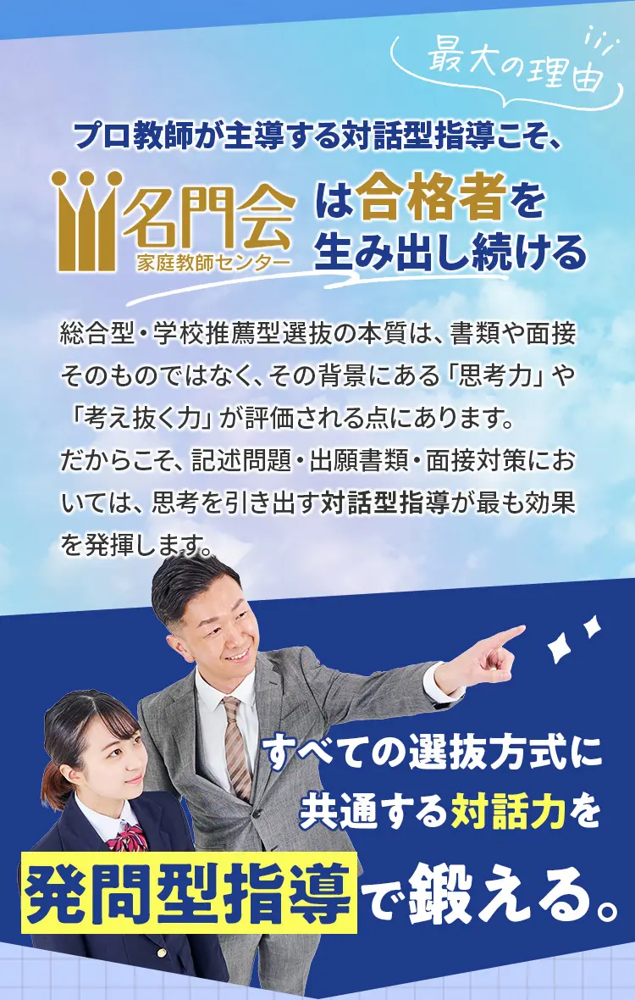
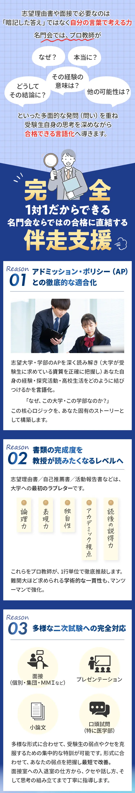
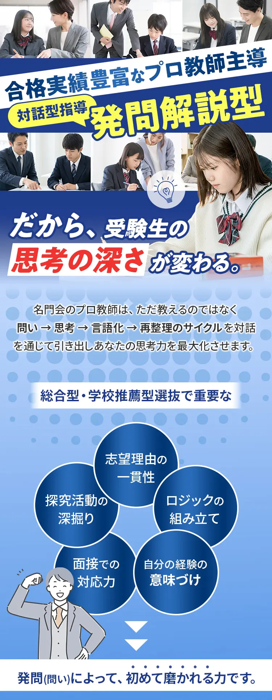
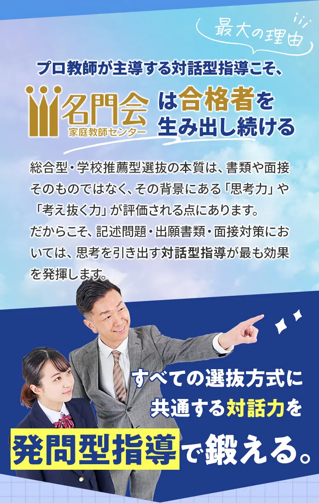
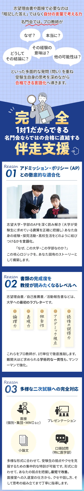
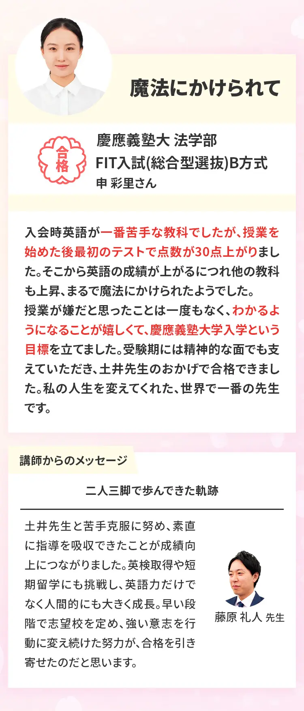
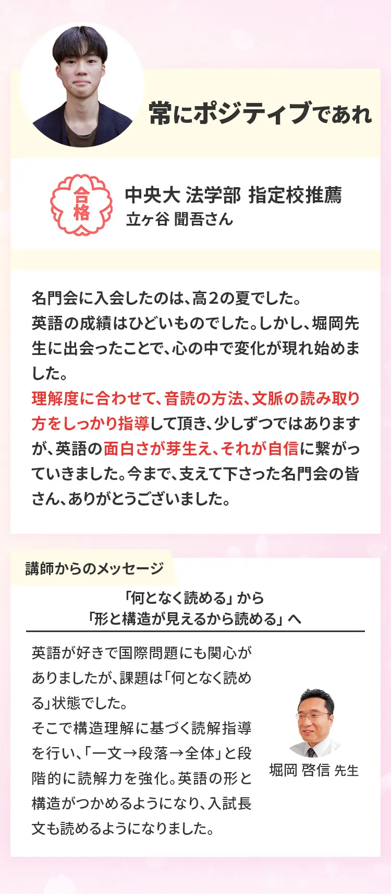
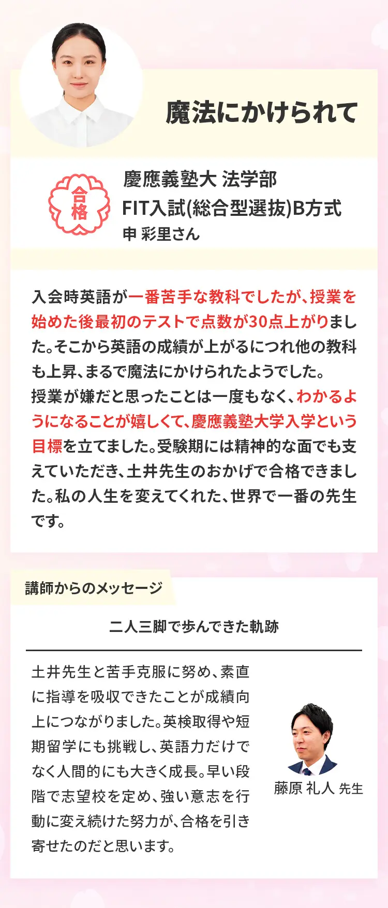
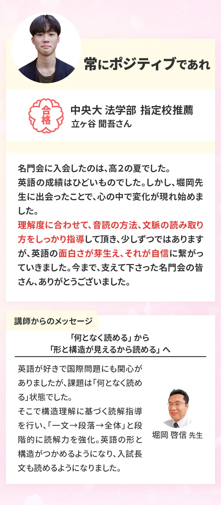

東京大学|学校推薦型選抜
共通テスト
一般選抜と同水準の高得点が必須
試験内容
書類・面接・口頭試問
極めて高い完成度が求められる
求められる人物像
APとの整合性が最重要。特定分野で突出したポテンシャルを持つ受験者が求められる。
京都大学|特色入試
[総合型選抜<自己推薦> / 学校推薦型選抜<公募>]
共通テスト
一般選抜と同水準の高得点が必須
求められる人物像
探求力・独自性・研究適正・将来像が重視される特に探求心を持っている人材が求められるので「学びの設計書」が重要。
大阪大学|総合型選抜 / 学校推薦型選抜
共通テスト
一般選抜と同水準の高得点が必須
試験内容
面接・小論文の難易度が高い
面接＝口頭試問
求められる人物像
多様な人材を求めている。また、学部ごとに求める人物像が明確に分かれている。
東京科学大学|総合型選抜 /
学校推薦型選抜
(理工学系・医師学系ともに実施)
共通テスト
一般選抜と同水準の高得点が必須
試験内容
理工学系では、女子枠の拡大と超難問の筆記試験と口頭試問が課される。
医師学系では、小論文や面接は「データ分析」や「論理的思考力」が問われる。
求められる人物像
高い専門性と研究への意欲、特に科学技術分野での優れた能力や活動実績が求められる。
一橋大学|学校推薦型選抜
共通テスト
一般選抜と同水準の高得点が必須
求められる人物像
産業界のリーダーに相応しい主体性や社会問題に対する関心が高い人材が求められる。
経済学部やソーシャル・データサイエンス(SDS)
学部はもちろん、商学部や社会学部でも、論理的思考力(数学的要素)は高く評価される。
 


